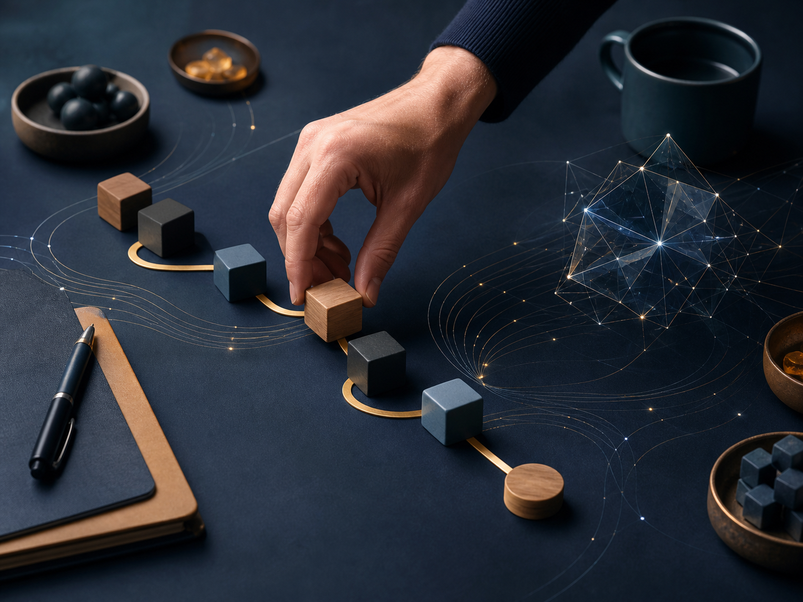

從 0 到 1：創業者你要比別人10倍好。
創業無法被教導，因為每一個創業都是原創且獨特的。
成功者是因為他們是從基本的原則來思考商業，而不是從成功方程式來思考。
彼得．提爾（Peter Thiel）一開始就問了最重要的一句話：「這世界上有什麼事，你跟別人想的不一樣？」
自從網路泡沫化之後，一般的商業模式都在教這四個觀念：
循序漸進
保持精簡有彈性
面對競爭求取進步
專注於產品，而非專注銷售
但他提出了四個完全不同的觀念：
大膽冒險比無聊好
壞計畫比沒計畫好
競爭產業賺不到錢
產品跟銷售一樣重要
這也讓我想起了在銷售上跟他人想的不一樣的地方：
效率：大部份人相信業績要好需要花很多時間，但其實效率做得好是不花時間的
系統：大部份人相信銷售都是靠說話，但其實系統做得好，你就可以不用執著說話

這樣子才能成為比別人十倍好的銷售
創業是一個從 0 到 1 的過程，因為只有比競爭對手厲害 10 倍，
你才會真正能夠獨佔市場。
所以我們每一個思想跟行為，都要想著如何比對方好 10 倍。
基礎決定命運
你沒有辦法在有缺陷的基礎上建立一個偉大的公司
選創業夥伴跟顧用人，都跟選伴侶一樣重要
創立一個像幫派一樣的公司，大家能夠為了同一個目標竭盡全力、死而後已，
這才能成為一家真正創新的企業。
AI 不會取代人類，反而是跟人類互補。
AI 最大的強項就是資料整理的能力，但它不會幫你做好決策。
人要培養的是做決策的能力，而做決策的能力取決於你腦袋的認知夠不夠廣。
所以在接下來，我們要運用 AI 來輔助我們的銷售。
AI 可以幫助我們：
整理說話內容
整理產品資訊
準備文字訊息
我們要訓練的是：
(a) 表達能力
(b) 與人連結的能力
(c)決策的能力
『加速失敗、加速反思、加速成長、10倍好。』
你的業績卡住了嗎？
我也走過那段「心累」的路，所以我懂那種明明很努力，卻一直卡在同一關的感覺。
如果你想知道：
你的「業務原廠設定」，適合主動開發，還是穩定經營？
你真正卡住的地方，是「開發」、「開口」，還是「成交」？
企業團隊想提升成交力，可以怎麼設計內訓？
想學更多，或邀約企業內訓，歡迎從這裡認識我：
Instagram：eintaixin
個人官網